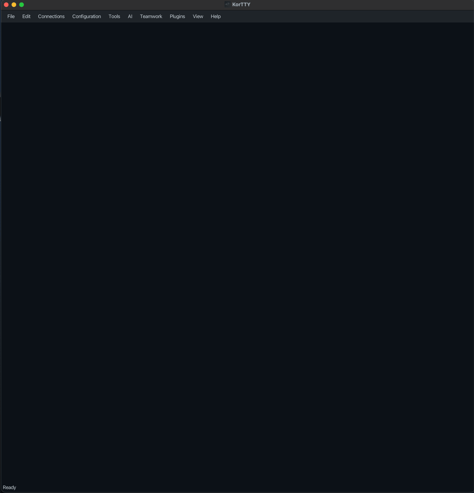
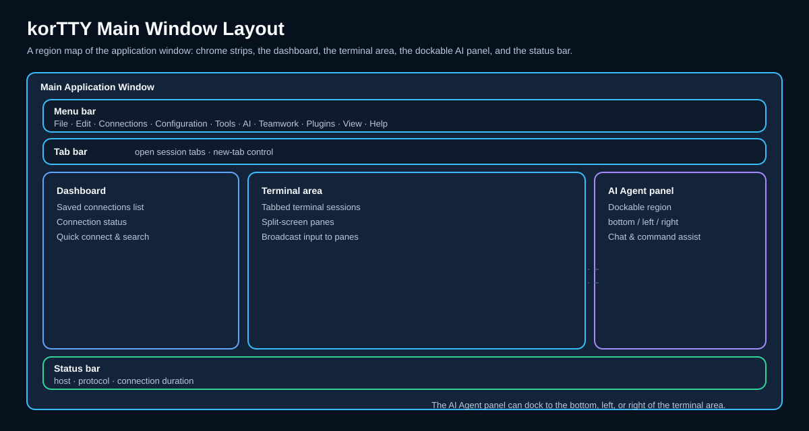
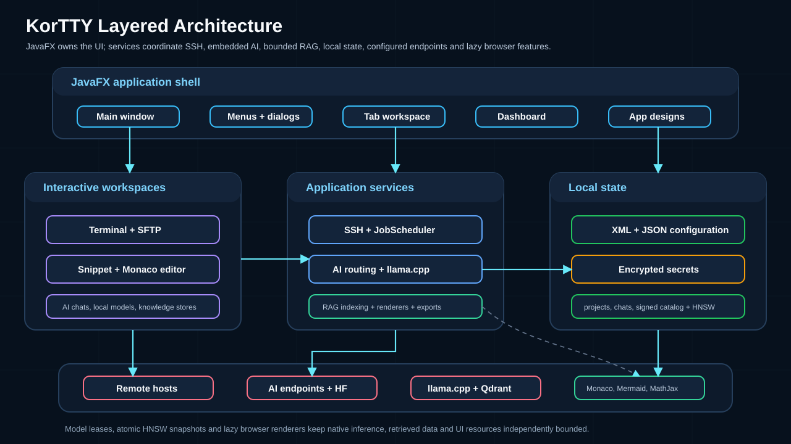

Main window overview¶


Ein neues korTTY-Fenster: die Menüleiste, der Terminalbereich (in dem Sitzungsregisterkarten und das optionale Dashboard angezeigt werden, sobald Sie eine Verbindung hergestellt haben) und die Statusleiste. Das folgende Diagramm bildet dieselben Regionen ab:

Das Hauptfenster von korTTY hat diese Bereiche:
- Menüleiste – Datei · Bearbeiten · Verbindungen · Konfiguration · Tools · KI · Teamwork · Plugins · Anzeigen · Hilfe. Alle Funktionen sind hier und über erreichbar Tastaturkürzel. Ein Live-Menü JobScheduler-Status erscheint nach Hilfe, wenn ein geplanter Eintrag aktiv ist. Während a Übersetzung des Reiseführers Wenn ausgeführt wird, befindet sich am rechten Ende der Menüleistenzeile eine Fortschrittsanzeige (Balken, Prozentsatz und geschätzte verbleibende Zeit) und bleibt auch dann sichtbar, wenn die Menüleiste selbst ausgeblendet ist.
- Tab-Leiste – jede SSH/Mosh-Sitzung wird in einem eigenen Tab ausgeführt. Ctrl+T öffnet die Schnellverbindung für eine neue Registerkarte; Ctrl+Tab / Ctrl+Shift+Tab Tabs wechseln. Wenn Toolfenster als Registerkarten öffnen aktiviert ist (Fenstereinstellungen), werden Verwaltungstools wie Snippets, der JobScheduler oder der KI-Manager auch hier als Registerkarten geöffnet – in dem Fenster, dessen Menü Sie verwendet haben – statt als separate Fenster.
- Dashboard (umschalten Ctrl+Shift+D) – ein Seitenbereich, der jede offene Verbindung mit Statuspunkten, Protokollabzeichen und KI-Agent-Abzeichen auflistet. Siehe Armaturenbrett unten.
- Dateibrowser (Ansicht → Dateibrowser ▸ Links anzeigen / Rechts anzeigen) – ein andockbarer lokaler Dateimanager mit Navigationssymbolleiste, Pfadleiste, Filter, Typsymbolen und einem Ordner-/Datei-/Auswahlzähler. Beim nächsten Start werden Seite, Breite, Status der versteckten Datei und letztes Verzeichnis wiederhergestellt. Siehe Dateibrowser.
- Live-Journal-Panel (Ansicht → Live-Journal, Ctrl+Alt+L) – Die aktive Registerkarte wird ausgeführt Sitzungsjournal als vollständige Journalseite, angedockt und in Echtzeit aktualisiert; Seite und Breite werden beim nächsten Start wiederhergestellt.
- Terminal area — the active terminal, with optional split-screen and broadcast input.
- Status bar — connection state, host/IP, active protocol, temporary SSH-key timer and connection duration.
Nur Terminal-Vollbild
Drücken Sie Ctrl+Shift+F (oder Ansicht → Nur Terminal-Vollbild), um das gesamte korTTY-Fenster – Menüs, Registerkarten und Statusleiste inklusive – in seiner vorherigen Fenstergröße und zentriert auf einem leeren Vollbildhintergrund anzuzeigen, sodass der Desktop und andere Fenster nicht mehr um Aufmerksamkeit konkurrieren. Ansicht → Terminal-Bildlaufleisten im Vollbildmodus ausblenden entfernt auch die Bildlaufleisten. Ein transparenter Terminalhintergrund wird undurchsichtig, während der Vollbildmodus aktiv ist, und kehrt beim Verlassen auf die gespeicherte Ebene zurück. Drücken Sie erneut Ctrl+Shift+F, um die Wiederherstellung durchzuführen.
Dashboard¶
Schalten Sie das Dashboard mit Ctrl+Shift+D oder Ansicht → Dashboard anzeigen um. Es wird auf der linken Seite eingeschoben, passt seine Breite an den längsten Eintrag an und folgt den Farben des aktiven App-Designs.
The header shows the panel title with two buttons: a collapse/expand toggle (collapses everything while any node is open, expands everything otherwise) and a refresh button. Below it, connections are organized as a tree:
- Hauptfenster – der Stammknoten mit einer aktiven/Gesamtsitzungsanzahl.
- Umgebungen – Verbindungen, deren gespeicherte Anmeldeinformationen eine Umgebung haben (z. B. Produktion oder Test), werden unter einem Umgebungsknoten geclustert; Anschlüsse ohne einen befinden sich direkt unter dem Hauptfenster.
- Gruppen – Registerkarten, die einer Verbindungsgruppe zugewiesen sind, werden unter ihrem Gruppenknoten angezeigt. Durch das Speichern einer geänderten Gruppe im Verbindungsmanager werden geöffnete Registerkarten sofort aktualisiert.
Jede Verbindungszeile zeigt ein Typsymbol, einen Statuspunkt, den Servernamen und ein Protokoll-Badge (ssh, mosh oder local). Der Statuspunkt unterscheidet drei Zustände: grün gefüllt für eine fehlerfreie Verbindung, rot gefüllt für eine Verbindung, die unerwartet unterbrochen wurde (einschließlich einer Unterbrechung des Mosh-Netzwerks) und ein leerer Umriss für eine Sitzung, die normal beendet wurde. Terminals mit KI-Agentenläufen tragen das gleiche ✋/⚡/⏸/ ✓-Abzeichen wie anderswo. Wenn Sie den Mauszeiger über eine Zeile bewegen, werden user@host und der Verbindungsstatus angezeigt. Ein Doppelklick (oder Enter) fokussiert die Registerkarte der Sitzung.
Klicken Sie mit der rechten Maustaste auf eine Verbindung für Fokus, Duplizieren, Erneut verbinden, SFTP-Client... (nur verbundene Sitzungen) und Schließen. In einer Fußzeile wird die Anzahl der „verbunden von insgesamt“ fortlaufend angezeigt, und in einem leeren Bereich wird ein Platzhalter angezeigt, bis die erste Sitzung geöffnet wird.
macOS Dock-Menü¶
Klicken Sie unter macOS mit der rechten Maustaste (oder bei gedrückter Ctrl-Taste) auf das korTTY-Symbol im Dock, um schnelle Aktionen auszuführen, ohne zur App wechseln zu müssen. Sie gelten für das aktuelle (fokussierte) Fenster und öffnen zuerst eines, wenn keines geöffnet ist:
- Neues Fenster
- Neuer Tab im aktuellen Fenster
- Verbindungen verwalten… (Verbindungsmanager)
- Projekt öffnen…
- Anleitung (die In-App-Anleitung)
- Über korTTY
Siehe die Menüreferenz für jeden Menüpunkt und die Referenz zu Tastaturkürzeln für die vollständige Liste der Beschleuniger.